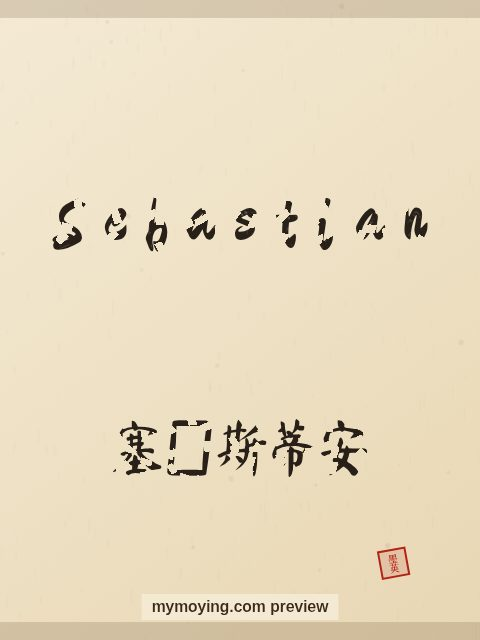

Sebastian in Chinese Calligraphy
Curious how Sebastian looks in Chinese brush calligraphy? This page shows the name, its Chinese transliteration 塞巴斯蒂安 (Sài bā sī dì ān), and the story behind it.

Sample. “Sebastian” in the Regular (楷书) brush style with the Chinese name 塞巴斯蒂安 (Sài bā sī dì ān). The paid file removes the watermark.
The Chinese characters for Sebastian
As a transliteration, Sebastian is usually written 塞巴斯蒂安 (Sài bā sī dì ān). Each character is listed below with its own dictionary meaning — the name is chosen by sound, not by meaning, and Moying does not translate names. Please have a person review the characters before any permanent use such as a tattoo.
Origin and meaning
With Greek origins, Sebastian is usually read as “venerable, revered”.
About the name Sebastian
Saint Sebastian was a Roman martyr pierced by arrows.
As a gift or a tattoo
Because it means “venerable, revered”, a Sebastian calligraphy print makes a thoughtful gift for someone who loves the name or its meaning.
Open Sebastian in the generatorFree watermarked preview. $1.99 once for a clean high-resolution download of this name in every style and setting. No subscription. Digital product, delivered instantly; see Terms.